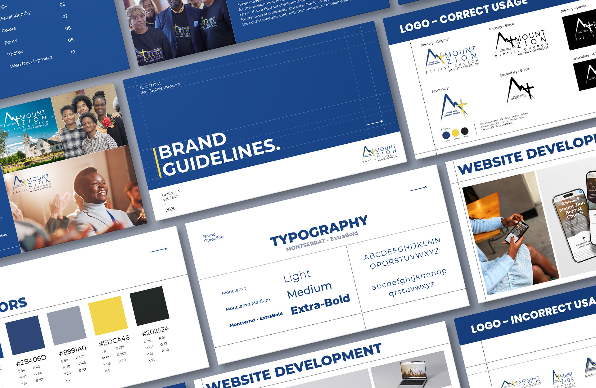
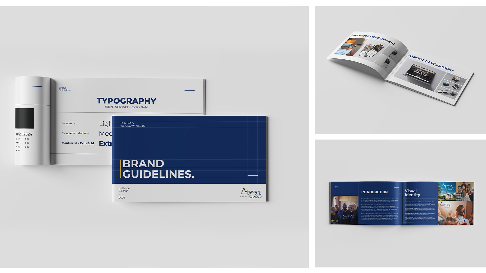
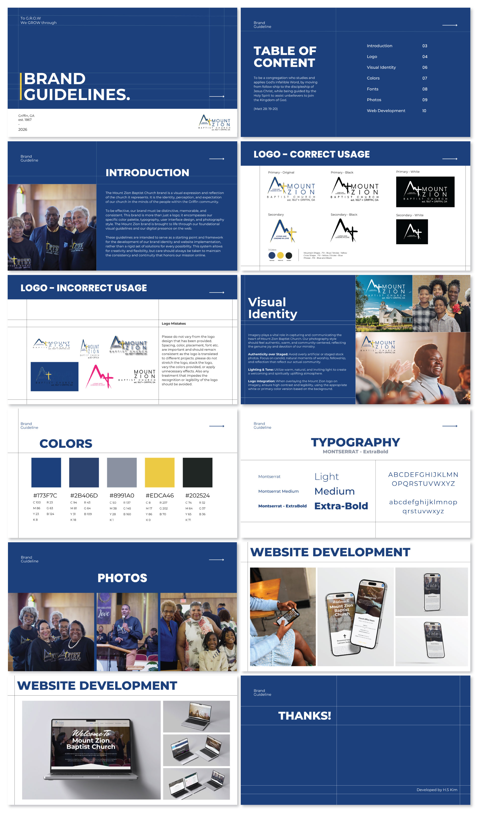
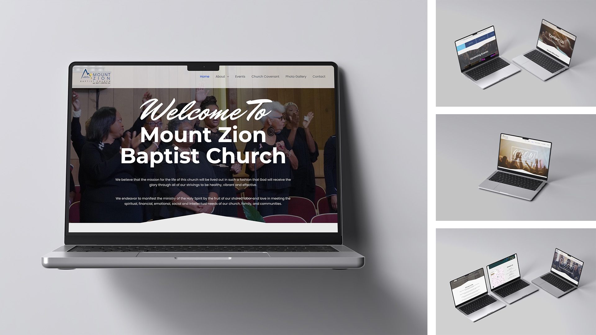
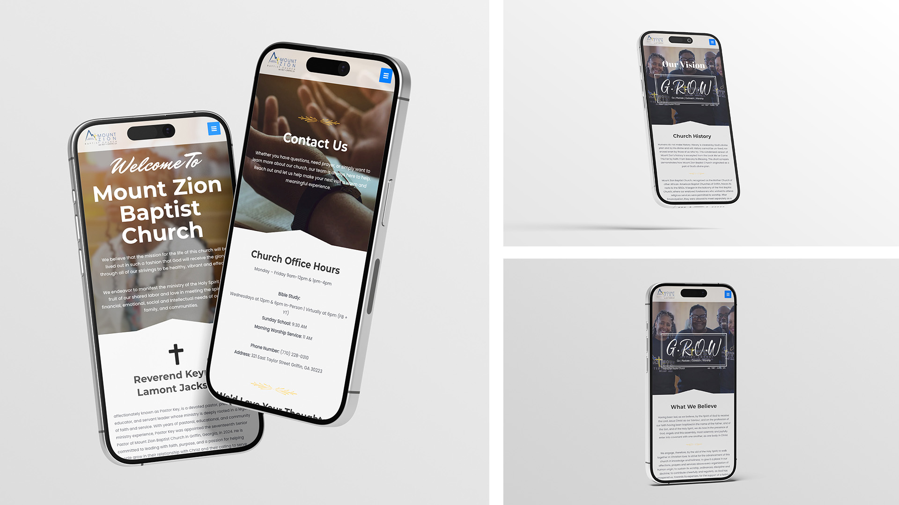

A church’s doors are open to everyone. Its brand should be too.
Mount Zion Baptist Church has a community with deep roots and a welcoming spirit, and its identity needed to reflect that everywhere it showed up. I developed a brand from the ground up and built it into a complete brand guideline covering the church’s colors, fonts, and imagery, so everything the church shares speaks with one clear voice.
From there, I designed and built the church’s website on WordPress, turning the new brand into a digital front door. Members can quickly find what they need, first-time visitors feel welcome from the first click, and the church team can keep everything fresh on their own, without needing a designer for every update.


The guideline was designed to be a practical reference the church can pick up and use without a designer on hand. It is organized so each part of the brand is easy to find and easy to follow.
It covers the church’s color palette, typefaces, and imagery style, with clear examples of how each should be used. The layout is clean and uncluttered, and the visual style of the document reflects the brand itself, so the guideline feels like part of the identity rather than a separate manual. The goal was simple: anyone working on behalf of the church can use these pages to keep everything consistent.

I built this website on WordPress to introduce Mount Zion Baptist Church online. It works well on both desktop and mobile, so members and first-time visitors can easily find what they need.
The site includes pages about the church, the pastor, and the church’s vision, along with a donation link, a contact form, contact information, and a map with directions. I organized the pages so visitors can quickly see who the church is and how to reach or support it.

